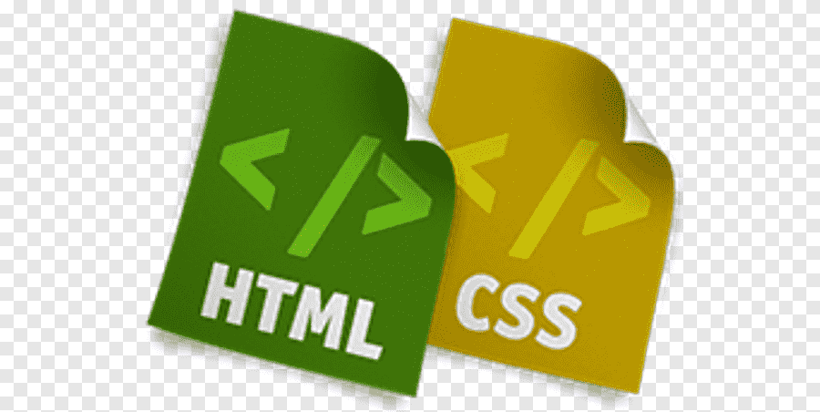

Skills
- Python
-  HTML & CSS
-
 JavaScript
JavaScript
Welcome to my portfolio! I'm Gautham, a Software Developer based in Bangalore. I specialize in full-stack web development. Here, you can find some of my recent projects and learn more about me. Feel free to get in touch!
Hi, I'm Gautham, a passionate software developer based in Bangalore. With a strong background in computer science and a keen interest in web development, I have honed my skills in building dynamic and responsive web applications. My journey into programming started in high school when I first encountered the world of coding through C and Java. Since then, my curiosity and love for technology have driven me to constantly learn and grow in this ever-evolving field.
I hold a degree in Computer Science from [Your University], where I developed a solid foundation in software engineering principles, algorithms, and data structures. During my studies, I worked on several projects that allowed me to apply theoretical knowledge to practical scenarios, further fueling my enthusiasm for software development.
In my professional career, I have had the opportunity to work on various projects, ranging from small business websites to large-scale web applications. My expertise lies in full-stack development, with proficiency in front-end technologies like HTML, CSS, and JavaScript, as well as back-end technologies such as Python and Node.js.
When I'm not coding, you can find me exploring the latest tech trends, participating in coding competitions, or contributing to open-source projects. I believe in the power of collaboration and continuous learning, and I am always eager to take on new challenges and collaborate with like-minded individuals to create innovative solutions.
Institution Name
Year of Completion
Description or achievements during your study.
Institution Name
Year of Completion
Description or achievements during your study.
This project involved creating a fully functional e-commerce website using HTML, CSS, JavaScript, and Python (Django). The site features user authentication, product listings, a shopping cart, and an order management system. I implemented a responsive design to ensure a seamless user experience across all devices.
The personal blog project was built using HTML, CSS, and JavaScript, with a backend powered by Node.js and Express. It includes features such as user registration, login, and the ability to create, edit, and delete blog posts. I focused on creating a clean, user-friendly interface and ensuring the application was secure and performant.
JavaScript